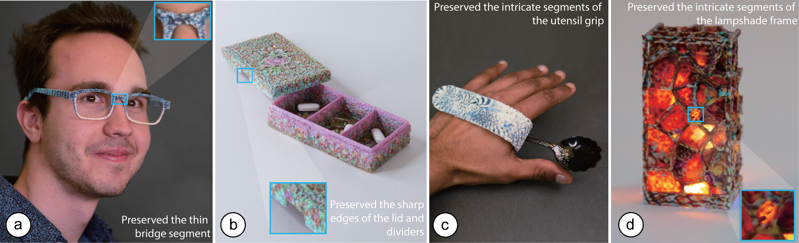
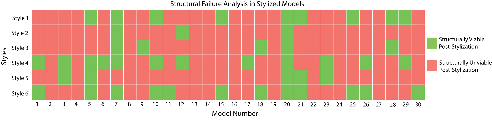
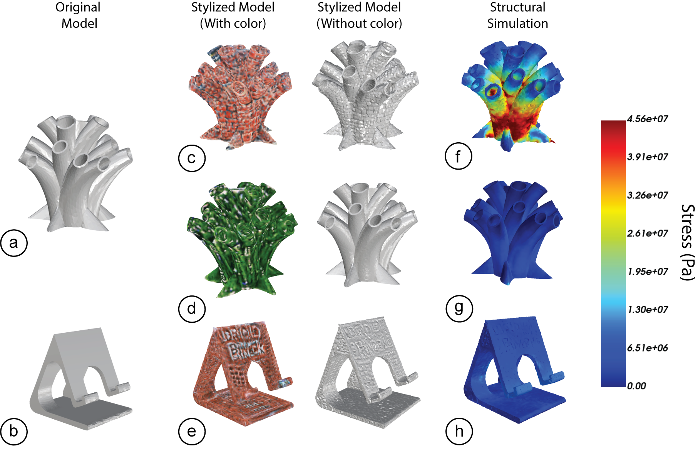
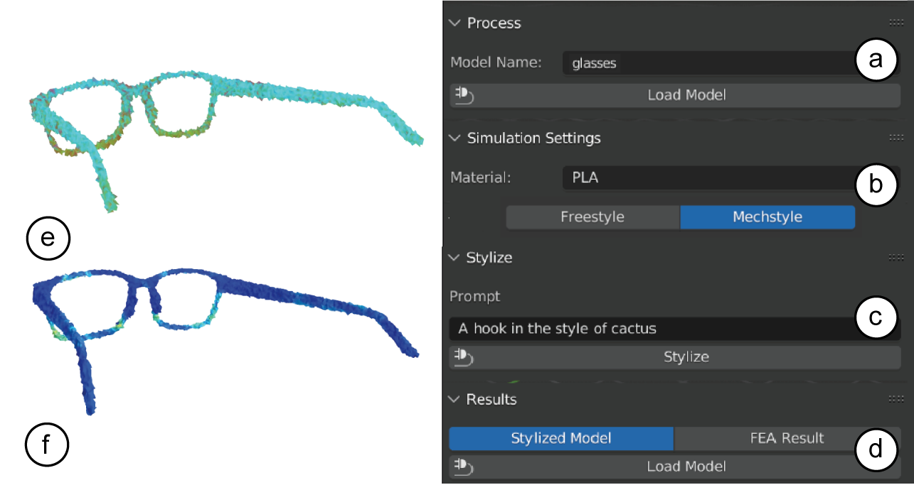
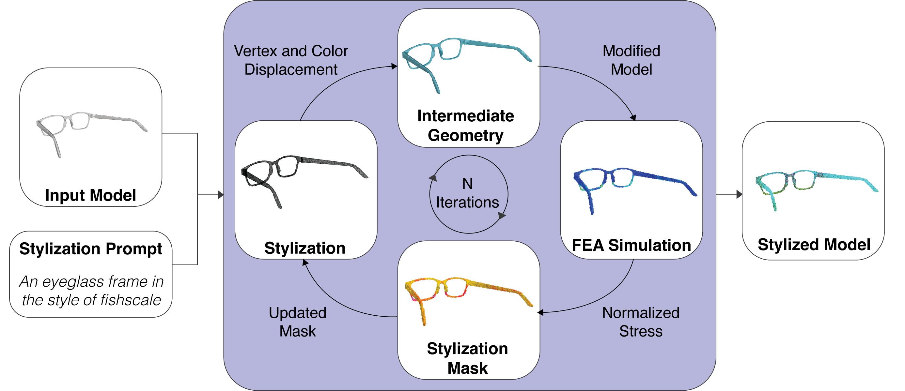
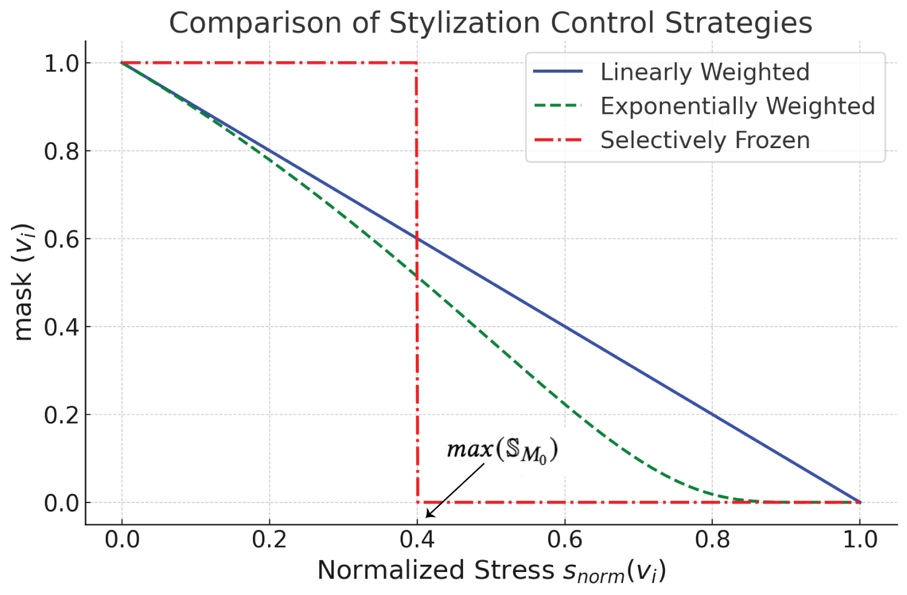
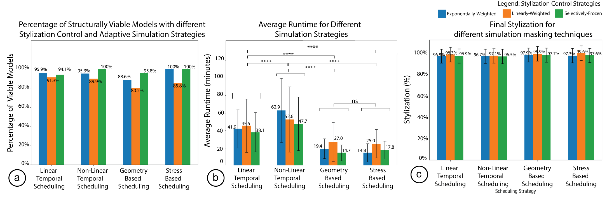
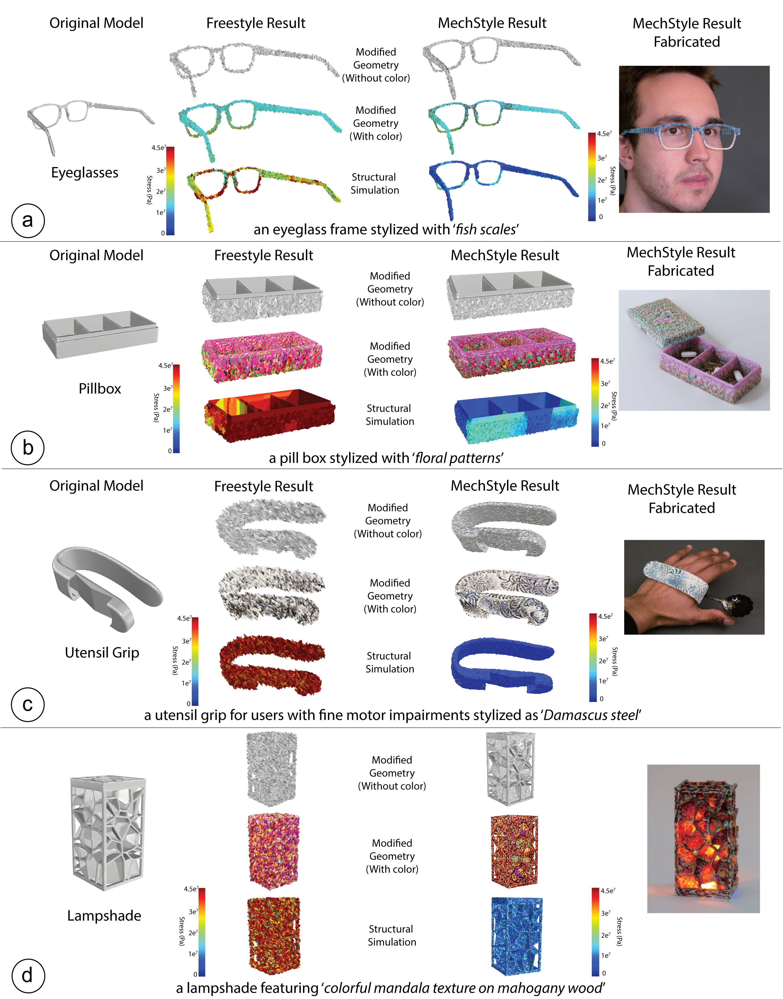

DOI PDF Video Slides Press Video Slides


MechStyle: Augmenting Generative AI with Mechanical Simulation to Create Stylized and Structurally Viable 3D Models

Figure 1. MechStyle enables creators to stylize 3D models with text prompts while preserving their structural integrity. Here, we used MechStyle to stylize five 3D models while ensuring that the printed objects do not break when accidentally dropped by the user: a) an eye-glass frame stylized with `fish scales' while preserving the fragile bridge. b) a pill box with floral patterns that retains the sharp edges of the lid and dividers, c) a utensil grip for users with fine motor impairments stylized as 'Damascus steel' pattern of the user's silverware set, d) lampshade featuring 'colorful mandala texture on mahogany wood' while preserving its intricate structural segments
ABSTRACT
Recent developments in Generative AI enable creators to stylize 3D models based on text prompts. These methods change the 3D~model geometry, which can compromise the model's structural integrity once fabricated. We present MechStyle, a system that enables creators to stylize 3D printable models while preserving their structural integrity. MechStyle accomplishes this by augmenting the Generative AI-based stylization process with feedback from a Finite Element Analysis (FEA) simulation. As the stylization process modifies the geometry to approximate the desired style, feedback from the FEA simulation reduces modifications to regions with increased stress. We evaluate the effectiveness of FEA simulation feedback in the augmented stylization process by comparing three stylization control strategies. We also investigate the time efficiency of our approach by comparing three adaptive scheduling strategies. Finally, we demonstrate MechStyle's user interface that allows users to generate stylized and structurally viable 3D models and provide five example applications.
INTRODUCTION
Generative AI is a rapidly growing field that democratizes creative expression. Co-creation tools based on Generative AI allow users to create new content by leveraging Deep Learning methods to learn from existing data in the form of text, images, music, and 3D models. Users prompt the system with a description of their desired output (e.g., “a vase with colorful flowers”), and the system returns a matching result. So far, these AI co-creation tools have mainly focused on creating digital content, such as images, text, and 3D models displayed on a screen. However, these results rarely hold up to the constraints of the physical world, limiting their applications in digital fabrication.
Unlike purely digital models, 3D models designed for fabrication must accommodate both physical constraints and aesthetic goals, often with a complex interrelationship between the two. To reduce complexity, many novice creators use existing open-source designs as a starting point, since these are assumed to be physically viable. Generative AI methods can support designers in modifying these 3D models based on text and image prompts. In the context of 3D mesh editing, “style” refers to the visual and geometric attributes that define an object's appearance. Prior work in generative AI has defined style modifications as encompassing color and local geometric changes that enhance an object's aesthetic appeal. However, these methods do not consider the physical characteristics of the original design, and as a result, customized models may meet aesthetic goals but no longer retain the physical viability of the original design.
Researchers have proposed a variety of approaches to help novice creators identify violations of physical properties. For example, Style2Fab maintains physical functionality when users stylize a 3D model with generative AI by first separating functional and aesthetic components, and then applying stylization only to the aesthetic parts. This approach preserves the model's physical affordances while approximating the desired style. However, physical properties such as structural strength can be affected by modifications to both functional and aesthetic segments. Because of this complex relationship between form and function, it is essential to holistically analyze how generative AI methods impact the physical properties of a model.
Researchers have proposed tools that analyze 3D printable models to automatically identify weak regions and repair them using techniques such as hollowing, thickening, and strut insertion. However, applying these geometric modifications after a model has already been stylized can distort its appearance and conflict with the style intended by the user. Alternatively, the stylization process itself can be adapted to jointly optimize for both aesthetic and structural goals. We argue that by framing stylization as a multi-objective optimization problem, it is possible to preserve a model's structural integrity while maximizing the user's desired style. By leveraging the iterative nature of 3D manipulations during stylization, structural considerations can be incorporated directly into the process, enabling the geometry to be optimized simultaneously for visual appeal and physical robustness.
In this paper, we present MechStyle, a method for stylizing 3D printable models while ensuring their structural viability. MechStyle augments the iterative stylization process with structural feedback from mechanical simulation. As the generative AI model modifies the geometry to approximate a desired visual style, it uses structural analysis to reduce changes in regions experiencing higher structural stress. We demonstrate how local stress values extracted from finite element analysis (FEA) simulations can inform per-vertex geometry manipulation. To make this augmented stylization process efficient, we investigate strategies for running mechanical simulations during stylization that preserve structural integrity while reducing runtime. Finally, we integrate MechStyle into an existing 3D editor, enabling users to interactively explore the trade-off between aesthetic appearance (style loss) and structural performance (structural loss).
In summary, we contribute an approach that augments generative AI-based stylization with mechanical simulation to ensure the structural viability of stylized, fabricatable 3D models. This approach is built on the following system components:
- A method for incorporating structural stress feedback from mechanical simulation into the generative AI stylization process, resulting in a combined loss function that optimizes both visual style and structural strength;
- Three stylization control strategies that reduce the impact of stylization in regions of the 3D model experiencing higher mechanical stress;
- Three adaptive scheduling strategies for simulating intermediate stylized versions of the 3D model while reducing overall system runtime.
FORMATIVE STUDY
We conducted a formative study to examine how generative AI–based stylization affects the structural integrity of 3D models. Each combination of a stylization prompt and a 3D model produces unique geometric changes that are closely tied to the model’s mechanical properties. In this study, we analyze the impact of stylization on structural integrity by comparing how different styles affect the same 3D model, as well as how the same style influences different 3D models.

Figure 2. Formative Study Results: We stylized 30 popular 3D models downloaded from Thingiverse. Each model was stylized with 6~popular styles extracted from a stylization benchmark. The stylized models were then simulated and analyzed for structural failure to identify models that are structurally unviable after fabrication. The model-style combinations colored in red were found to be structurally unviable post-stylization, while the model-style combinations colored in green were viable. Only 25.55% of models were structurally viable after being stylized.
Dataset and Stylization
To investigate the impact of stylization across different 3D models, we generated 180 stylized models (6 styles × 30 models). We selected the six most common stylization prompts from the X-Mesh dataset, a benchmark for text-driven 3D stylization. The styles were “brick,” “stone,” “cactus,” “realistic,” “crochet,” and “green.” Although the X-Mesh dataset includes 30 reference 3D models, we did not use them because they are primarily decorative figurines (e.g., a dragon or a tiger) and do not reflect the mechanical complexity of models intended for fabrication. Instead, we collected 30 popular models from Thingiverse that were structurally viable at their original scale.
We standardized all models to a resolution of 25,000 vertices, following the mesh standardization procedure used in prior work. This resolution was kept constant throughout the stylization process. Both the original and stylized models were then converted into tetrahedral (TET) meshes for finite element analysis (FEA) simulation using fTetWild. Across all TET models, the average number of elements was 28.2k (standard deviation: 12k). The relatively high variance is due to the substantial increase in geometric complexity introduced by stylization.
Finite Element Analysis Simulation MethodTo evaluate structural integrity, we perform a mechanical simulation in which each model is dropped onto a flat, rigid surface from a fixed height, following an established simulation-based evaluation approach. Mechanical simulation has been shown to be an effective way to identify structurally weak regions in 3D models. In particular, finite element–based simulations are preferred over heuristic methods such as wall-thickness analysis, because a model’s structural viability depends on multiple interacting factors, including geometry, applied forces, and material properties.
Local heuristic approaches can be insufficient because they do not account for the full range of forces acting on a model or the material’s mechanical behavior. Additionally, stylization introduces geometric changes that alter the model’s mass distribution, which in turn affects how forces are applied to local regions and can significantly influence structural performance. To capture these cascading effects and fully assess how stylization impacts structural integrity, we rely on mechanical simulation as our evaluation method.
All simulations are performed using the WARP simulation environment, with PLA specified as the material, as it is a commonly used material in 3D printing.
Failure AnalysisAfter the simulated drop test, we evaluate whether a model remains structurally viable using a standard failure analysis approach. We apply the von Mises yield criterion, which determines whether the maximum stress in the model exceeds the material’s yield stress. For PLA, this yield threshold is 45.6 MPa. If the computed stress surpasses this threshold, the model is considered structurally non-viable and is likely to fail when dropped.
ResultsFigure 2 shows the results of the failure analysis for all 30 3D models stylized with each of the six styles. Models highlighted in red are no longer structurally viable after stylization, while those shown in green retain their viability. Overall, only 25.55% of the models remain structurally viable after stylization, highlighting the significant impact that generative AI–based stylization can have on the structural integrity of 3D models.

Figure 3. Formative Study Results: Comparison of impacts of different styles on different 3D models. We find that different styles have different impacts on the same 3D model, and that different models are differently impacted by the same style. a)~The original pen holder 3D model. b)~The original phone stand 3D model. c)~Pen Holder stylized as a `brick pen holder'. d)~Pen Holder stylized as `green'. e)~Phone Stand stylized as a `brick phone stand'. f)~Stress distribution for the `brick pen holder}' model. g)~Stress distribution for the `green}' pen holder. h)~Stress distribution for `brick phone stand}' model.
Different styles have different impacts on the same 3D modelFigure 3 shows the same pen holder 3D model (Thing ID: 73489) stylized using two different prompts: “brick pen holder” and “green pen holder.” When stylized with the “brick” prompt, the geometry is altered in a way that renders the model structurally non-viable, with the maximum stress reaching approximately four times the yield stress of PLA. The stress visualization highlights regions in red where the simulated stress meets or exceeds the material’s yield threshold; these areas would likely fail if the object were dropped.
Examining the modified geometry without color reveals that the “brick” stylization introduces ridge-like surface features. These geometric changes alter the model’s weight distribution and weaken its lower regions, resulting in a significantly compromised base. In contrast, when the same pen holder is stylized using the “green” prompt, the maximum stress remains below the PLA yield threshold, as indicated by the predominantly blue stress visualization. In this case, the stylization causes only minor geometric changes, preserving much of the model’s original structural strength.
This comparison illustrates that different stylization prompts manipulate geometry in distinct ways, leading to substantial variation in the structural stresses experienced by the same underlying 3D model. As a result, different styles can have markedly different impacts on the structural viability of a single model.
Different models are differently impacted by the same styleWe also found that the same style results in different maximum stress values for different 3D models. Recall that the “brick” style rendered the pen holder unviable (Figure 3c,f). However, when the same “brick” style is applied to a phone stand model (Thing ID: 2120591), as shown in Figure 3e, the model remains structurally viable (model number: 25, style number: 1 in Figure 1). We observe that stylization introduces similar geometric and color changes in both models, yet the structural simulation results show significantly different stress distributions. This indicates that different model geometries are impacted differently by stylization. In this example, the thin walls and complex overhangs of the pen holder are weakened more than the thicker segments of the phone stand.
In summary, our formative study showed that stylizing 3D models significantly impacts their structural viability; only about 1 in 4 models remained structurally viable after stylization (25.55%). We also observed that the same model can be affected differently depending on the chosen style, and that applying the same style across different models yields varying outcomes. In the following sections, we present MechStyle, a system that uses in-situ simulation during the stylization process to preserve structural integrity while approximating the desired visual style.
SYSTEM OVERVIEW
MechStyle integrates mechanical simulation into 3D model stylization to systematically control the stylization process. As a model is stylized, MechStyle simulates intermediate versions to identify local regions where structural stress increases, and then reduces stylization in subsequent iterations for those regions, thereby preserving the model’s functional geometry.
MechStyle User Interface and WorkflowUsers can access MechStyle through a user-interface plugin for the open-source 3D design software tool Blender. To stylize a model with MechStyle, the user: (1) loads the model, (2) specifies their print material, and (3) specifies the desired style as a text prompt. MechStyle then processes the model and standardizes it to a resolution of 25k vertices based on Style2Fab’s evaluation for stylization. Next, MechStyle stylizes the model while using integrated simulation to preserve its structural integrity throughout the process. After stylization, the user can toggle between the stylized model and its FEA results, which are shown as a heatmap with red regions indicating increased stress. Finally, the user exports the stylized model for fabrication.

Figure 4. In MechStyle's UI, the user a) loads a 3D model, b) enters their material for fabrication and chooses MechStyle or Freestyle technique, and c) enter their stylization prompt. d) the model is processed with the style, and the stylized model is loaded in the UI. e) Next, the UI allows the users to explore the stylized model, and also f) the FEA result of the stylized model to show regions of high stress, and its structural viability
Since the wait time for a MechStyle result can be significant, this UI tool also allows users to rapidly explore different styles. This workflow involves the following steps. Although the stylization mode is set to “MechStyle” by default, the user can switch to “Freestyle” mode. In this mode, structural simulation feedback is not incorporated during stylization, and the model is fully stylized based solely on the text prompt. The resulting stylized model is then simulated using MechStyle’s FEA simulation tool to generate a stress heatmap. This mode enables users to quickly explore different styles and analyze their impact on the model’s structural integrity. After selecting an intended style, the user can switch back to MechStyle mode, where stylization is guided by structural simulation feedback, producing a result that reflects the desired style while maintaining structural viability.
Method
We investigate two specific challenges in integrating mechanical simulation into the stylization process. The first challenge is incorporating feedback from mechanical simulation into subsequent stylization steps to control the impact stylization has on regions of high stress. We present three stylization control strategies for incorporating stress results from simulations of intermediate stylized versions of a model into the subsequent stylization process.
The second challenge is reducing the number of computationally intensive simulations run during stylization by identifying when simulations are most informative. We present three adaptive scheduling strategies to determine when simulations should be executed to best preserve structural integrity.
To integrate stylization and simulation into a single system, MechStyle is built on two components: the stylization module and the simulation module (Figure 2). The stylization module takes the user’s desired style prompt and iteratively modifies the geometry, with each iteration producing a new, unique intermediate 3D model. The simulation module tracks changes in stress on the model resulting from these intermediate geometries.
Stylization occurs at every iteration, while simulation is run only on selected intermediate models, reducing the overall time spent on simulation. As the stylization module modifies the geometry, MechStyle tracks cumulative changes in both geometry and stress across iterations. Together, these two modules operate in tandem to iteratively stylize the model while controlling its impact on structural integrity.

Figure 5. MechStyle System Architecture. The stylization module iteratively modifies a model's geometry, while the simulation module simulates the intermediate stylized models to identify stress regions and update the stylization mask.
Stylization progresses by iteratively modifying a model with small displacements of its vertices and changes in their color. Over many iterations, these changes converge on a new model that matches the given style prompt. These changes are done gradually, with each vertex changing the model by <1\% of the model size after each iteration of stylization.
We define a 3D model as an input mesh \( M \) with vertices in Cartesian coordinate \( \mathbb{V}_M \in \mathbb{R}^{n \times 3} \) connected by faces \( \mathbb{F}_M \in \{1,\ldots,n\}^{m \times 3} \) with color channels \( \mathbb{C}_M \in \mathbb{R}^{n \times 3} \) corresponding to R, G, B colors. We use the X-Mesh model architecture for stylization, which takes a text prompt from the user and iteratively displaces each model vertex and modifies their color channels to conform to the text prompt.
Vertices are shifted along their normal to the mesh surface. The set \( \mathbb{D} = \{ d_v \ \forall\ v \in \mathbb{V} \} \) defines the distance along each normal the vertex will move in a given iteration. That is, stylization shifts each vertex \( v \) by a distance of \( d_v \) along the normal of \( v \) relative to the mesh. This forms a modified 3D model geometry. The color of the model is shifted with similar displacements in the color channel \( \mathbb{C} \).
We run this process for \( N = 200 \) iterations, which has been shown to converge on a solution across a variety of models and styles. This results in a stylized model \( M_s \).
Mechanical Simulation Method
We use mechanical simulation to estimate the stress on regions of a model caused by forces similar to those it may experience after fabrication. Our choice of simulation is guided by two constraints: it must support complex geometries and be computationally efficient enough to run across many intermediate stylization iterations. Accordingly, we use a solid finite element analysis (FEA)–based method with tetrahedral elements and a hyperelastic neo-Hookean constitutive model. This simulation is implemented using NVIDIA Warp, a Python framework for developing differentiable, GPU-accelerated high-performance simulations.
The simulation is material-specific and initialized using the Lamé parameters of the chosen material. The Lamé parameters, denoted as \( \lambda \) and \( \mu \), are material-specific constants that can be derived from the material’s Young’s modulus \( E \) and Poisson’s ratio \( \nu \). In this work, we focus on PLA, a widely used material for 3D printing. Additional materials can be supported by modifying the Lamé parameters provided to the simulation.
For the simulation setup, we adopt a model- and use-case-agnostic stochastic FEA technique previously proposed by Langlois et al., which evaluates structural integrity using a drop-test scenario. In this approach, the model is dropped onto a hard surface from a fixed height, and the resulting forces are used to compute the stress distribution across the geometry. In our implementation, we define the environment with an impenetrable surface and simulate the 3D model dropping under gravity from a height of 1.5 meters, matching the conditions used in prior work.
To conduct the failure analysis, we use the von-Mises yield criterion based on Stava et al. This method compares the von Mises stress values \( \sigma_v \) for all \( v \) vertices in the model \( M \) with a material-specific yield strength \( S_{\text{material}} \). We define the critical level of stress at which a model is likely to break as \( \sigma_c \) (Equation 1). This critical value is defined by the Lamé parameter \( \lambda \), which is a constant \( 0 < \lambda < 1 \) that specifies the maximum allowed value of stress with respect to the yield strength of the material \( S_{\text{material}} \). Decreasing the value of \( \lambda \) increases the sensitivity of the method but can also lead to the generation of false positives. For our experiments, we use the value \( \lambda = 0.2 \), as specified in prior work.
\[ \sigma_c = \lambda \cdot S_{\text{material}} \]
SIMULATION-INFORMED STYLIZATION VIA MASKING
Each iteration of stylization produces an intermediate version of the stylized model. We identify local regions with increased stress by simulating this intermediate model and conducting a failure analysis using the method proposed by Stava et al. We then propagate this information to the stylization module as a mask, which reduces per-vertex stylization in regions experiencing higher stress during subsequent stylization iterations.
Identifying Regions of Increased Stress
For a specific iteration \( i \) of stylization, the original model \( M_0 \) is modified to create an intermediate geometry \( M_i \), which is then passed through mechanical simulation to extract the stress distribution \( \mathbb{S}_i \). We perform failure analysis by normalizing \( \mathbb{S}_i \) with \( \sigma_c \), the material-specific critical stress value. This produces a normalized stress vector \( \mathbb{S}_{\text{norm}}(i) \), which measures how close each vertex is to the critical stress threshold and, by extension, how close the material is to failure.
For a vertex \( v_i \) on the model \( M_i \), the normalized stress value is denoted as \( s_{\text{norm}}(v_i) \). When \( s_{\text{norm}}(v_i) > 1 \), the stress at that vertex exceeds the critical stress value and the model is no longer structurally viable at that location. Conversely, when \( s_{\text{norm}}(v_i) < 1 \), the stress remains below the critical threshold and the material is considered structurally viable.
\[ s_{\text{norm}}(v_i) = \frac{s_{v_i}}{\sigma_c} \]
\[ \mathbb{S}_{\text{norm}}(i) = \{ s_{\text{norm}}(v_i) \;\forall\; v_i \in \mathbb{V}_{M_i} \} \]
Creating the Stylization MaskOur goal is to keep the stress on each vertex \( v \) of the model below the critical value (i.e., \( s_{\text{norm}}(v_i) < 1 \)). We achieve this by locally masking individual vertices to reduce their displacement during subsequent stylization iterations. The masking function uses the normalized stress vector \( \mathbb{S}_{\text{norm}} \) to reduce or freeze geometry displacement at each vertex.
A given masking function \( \text{mask}(v) \) returns a weight between 0 and 1, which is applied to reduce the displacement distance of a vertex during stylization (i.e., \( d_v \cdot \text{mask}(v) \)). When the mask value is 1, the vertex can move freely during stylization. As the mask value approaches 0, displacement at that vertex is increasingly constrained.
This produces the masked displacement set \( \mathbb{D}_{\text{mask}} \). We do not normalize color modification values, as they do not affect structural properties.
\[ \mathbb{D}_{\text{mask}} = \{ d_{v_i} \cdot \text{mask}(v_i) \;\forall\; v_i \in \mathbb{V}_{M_i} \} \]
In the next section, we describe three stylization control strategies that apply the mask created by \( \mathbb{S}_{\text{norm}} \) in different ways to reduce stylization in regions with increased stress while remaining close to the stylization prompt.
Types of Stylization Control StrategiesWe developed three stylization control strategies that reduce stylization by different amounts in regions experiencing increased local stress. The first strategy linearly reduces per-vertex displacement according to stress magnitude. The second strategy exponentially reduces per-vertex stylization. The third strategy completely freezes stylization in high-stress regions.
Linearly Weighted StylizationIn this approach, the displacement applied to each vertex during the stylization process is reduced linearly based on how close the local stress at that vertex is to the critical stress value. As the stress increases, the amount of stylization decreases proportionally.
\[ \text{mask}_{v_i} = 1 - s_{\text{norm}}(v_i) \]
Exponentially Weighted StylizationIn this approach, we exponentially reduce the stylization in areas with increased stress. This technique is more sensitive to high stresses because as the model’s stress values approach the yield stress value of the material, stylization is reduced more aggressively. To compute the mask, we calculate the negative exponent of \( \frac{s_{\text{norm}}(v_i)}{1 - s_{\text{norm}}(v_i)} \), which decreases exponentially as \( \mathbb{S}_{\text{norm}} \) approaches 1. As a result, the subsequent geometric displacement becomes exponentially smaller as stress increases. Equation (2) shows the exponential masking function for a given vertex.
\[ \text{mask}_{v_i} = e^{-\left(\frac{s_{\text{norm}}(v_i)}{1 - s_{\text{norm}}(v_i)}\right)} \]

Figure 5: Visualization of three stylization control strategies. \( \mathbb{S}_{\text{norm}}(i) \) measures how close individual vertices are to the critical stress value \( \sigma_c \). The “Linearly Weighted” strategy reduces stylization proportionally as local stress approaches \( \sigma_c \). The “Exponentially Weighted” strategy reduces stylization more sharply using an exponential function. The “Selectively Frozen” strategy completely stops stylization once stress reaches the maximum stress in the original model (max(\( \mathbb{S}_{M_0} \))). The y-axis, labeled as mask\( (v_i) \), represents the modulation applied to the per-vertex displacement \( d_i \).
Selectively Frozen Stylization
In this approach, the displacement matrix is immediately set to 0 once the vertices exceed a certain stress value resulting in no more vertex displacement in that region. Unlike the other approaches, selective freezing cannot use failure analysis (i.e., \( \mathbb{S}_{norm} \)) since once the failure criterion has been reached, subsequent iterations are likely to jump significantly past the failure point. Instead, while setting the stress threshold, we chose the maximum stress in the original model since the original model was structurally viable. This method is similar to that employed in Style2Fab where stylization is frozen in functional segments of the model.
\[ \text{mask}_{v_i} = \begin{cases} 0 & \text{if } s_{v_i} \geq \max(\mathbb{S}_{M_0}) \\ 1 & \text{if } s_{v_i} < \max(\mathbb{S}_{M_0}) \end{cases} \]
In summary, we control the per-vertex stylization in areas with increased stresses by creating a mask based on the simulation results. We normalize the displacement vector \( \mathbb{D} \) before applying it to the model \( M_i \) with the updated mask. We compare these different stylization control strategies in our technical evaluation, which evaluates how closely the desired style was approximated (i.e., style-loss) and if the model was structurally viable after stylization.
ADAPTIVE FEA-SIMULATION SCHEDULING
Another challenge when trying to preserve the structural integrity of the model during stylization is to identify when feedback from the mechanical simulation will be most informative to the stylization process. A naive method would run a simulation at each iteration step of stylization. However, another important factor to consider for this integration is the total run-time of the combined system. FEA simulations are computationally intensive, and even though we leverage a GPU-accelerated simulation, running simulations at each iteration step is computationally prohibitive. We analyze the simulation run-time for stylized models and then discuss different scheduling strategies to efficiently run the simulation during stylization.
Differences in Stylization and Simulation TimesIdeally, FEA simulations would assess stress changes after each iteration of stylization. However, the run-time for a single FEA simulation is significantly more than that of one stylization iteration. Across the 30 models from our formative study dataset, one iteration of stylization with any style takes on average 2.67 seconds (std = 1.17), while the FEA simulation of the same models took an average of 4.61 minutes (std = 2.62). Since stylization runs for 200 iterations before convergence, simulating after each iteration increases the average run-time to 15.52 hours. Therefore, running FEA simulations at the same granularity as stylization is not feasible.
Thus, the challenge here was to find an efficient scheduling strategy that reduces overall runtime while controlling for stylization's impact on the 3D model's structural viability. In the next section, we describe a set of scheduling techniques for simulation that can be incorporated into the stylization process.
Types of Adaptive Scheduling StrategiesTo develop a method to determine at which stylization iterations simulation is the most informative, we developed three different adaptive scheduling strategies. The first strategy is time-based, i.e., it distributes simulation after a specific number of stylization iterations. The second strategy is geometry-based, i.e., it correlates the local iterative geometry change in the model with the local 3D model thickness. The third strategy is stress-based, i.e., it correlates the local geometry change from stylization to the local stress, thereby monitoring geometry changes in structurally weaker areas more closely.
Temporal SchedulingTemporal scheduling runs simulation after a certain number of stylization iterations. We differentiate between linear and non-linear scheduling. For linear scheduling, simulations are uniformly distributed throughout the stylization process. However, a non-linear scheduling strategy might be more effective since stylization makes larger geometry changes at early iterations and then converges on more subtle changes. Moreover, displacements across iterations accumulate over iterations throughout the stylization. Thus, simulating more often early in the process captures stress changes related to those early geometry changes. Some examples of a non-uniform scheduling strategy are quadratic or exponential scheduling.
Geometry-Based SchedulingThis scheduling strategy determines when to run the FEA simulation based on the cumulative displacement of vertices over a number of stylization iterations with respect to the local model thickness. This approach is motivated by the tendency of models with thin geometries to be impacted more by stylization than thicker geometries. Thus, even small vertex displacements on thin geometries influence the structural integrity of the model. We track cumulative displacement at all vertices across iterations, and simulations are triggered when displacement surpasses a threshold based on the model thickness at that vertex. This heuristic method ensures that simulations are conducted in direct response to the stylization's impact on the geometry. In our experiments, we use a threshold of 10% of local thickness.
Stress-Based SchedulingThis strategy refines the geometry-based approach by accounting for local stress values. The local stress values in the original model provide information on which sections are structurally weak. We use the \( \mathbb{S}_{\text{norm}} \) values to evaluate the model’s initial structural viability. Combining this information with the geometric-thickness information (Geometry-Based Approach) helps us determine when a vertex \( v_i \) with high stress (\( s_{\text{norm}}(v_i) \) close to 1) is undergoing a geometric change that could lead to an increase in stress. In this strategy, we assign vertex-level thresholds by modifying the geometry-based threshold proportionally with the local normalized stress value. By monitoring geometry changes in structurally weaker areas more closely, this method ensures that simulations are prioritized based on the potential risk to the model’s structural viability.
In summary, we designed three scheduling strategies that adaptively determine when to simulate an intermediate step of the stylization process to minimize run-time while preserving structural integrity. We evaluate these three different scheduling strategies in our technical evaluation for their run-time efficiency, ability to preserve structural integrity, and their ability to approximate the desired style.
TECHNICAL EVALUATIONWe evaluated MechStyle to understand if it preserves the structural integrity of different 3D models given a variety of styles. We tested which of our stylization control strategies and adaptive scheduling strategies are most effective in preserving structural integrity, approximating desired style, and minimizing runtime. We used the same 30 models and 6 styles as in the formative study, resulting in 180 stylized models per condition.
For stylization control strategies, we evaluate all three techniques described in the masking-strategies section (i.e., linearly weighted, exponentially weighted, selectively frozen). For adaptive scheduling techniques, we evaluate all four techniques described in the scheduling-strategies section (i.e., linear and exponential temporal scheduling, geometry-based, and stress-based), where the linear temporal scheduling strategy is the control condition. In total, we ran MechStyle in 2,160 different configurations (30 models × 6 styles × 3 stylization strategies × 4 scheduling strategies).

Figure 7:
Technical Evaluation: Using our dataset of 30 models, we evaluate a) what percentage of models were structurally viable after stylization between all possible combinations of simulation control strategies and adaptive simulation strategies, b) the average runtime of the different simulation strategies, c) the average style-loss between the different stylization control strategies compared to the baseline of original (freestyle) stylization. 'Stress-based' scheduling with `exponentially-weighted' stylization, and `Stress-based' scheduling with `selectively-frozen' stylization provide the best trade-off between structural viability, run-time and style-loss. (*p < 0.05, **p < 0.01, ***p < 0.001, ****p < 0.0001)
Evaluating Structural Viability of Models
We evaluated the structural viability of the stylized models under different MechStyle configurations using the same approach as in the formative study. While in the formative study, only 25.55% of models were structurally viable after stylization, MechStyle improved the result in all configurations with the best result being 100% of models being structurally viable and the worst-case being 80.2% of models being structurally viable (Figure 6a). Three configurations resulted in all models being structurally viable: (1) Non-Linear Temporal Scheduling with selectively frozen stylization control, (2) Stress-based scheduling with exponentially weighted stylization control, and (3) Stress-based scheduling with selectively frozen stylization control. Thus, these three combinations of techniques are robust in identifying structural issues and preventing the model from becoming unviable during stylization.
Evaluating Run Time with Adaptive Scheduling StrategiesTo evaluate which MechStyle configuration is the most run-time efficient, we extracted the average run-times for each combination of stylization control strategy and scheduling strategy as shown in Figure 6b. Since the runtime is affected by simulations, we first compare simulation strategies. Between the simulation strategies, a Welch’s ANOVA test showed a significant effect (\( F = 452.72 \), \( p < 0.0001 \)) in the system run-time. A Games Howell post-hoc analysis shows that the “Non-Linear Scheduling” strategy increased the system's runtime (\( T = 854.73 \), \( p < 0.0001 \)). However, the “Geometry-Based” (\( T = 16.03 \), \( p < 0.0001 \)) and “Stress-Based” (\( T = 18.02 \), \( p < 0.0001 \)) adaptive scheduling strategies significantly reduce the overall runtime of stylization as compared to the control. There was no significant difference (\( p > 0.1 \)) between “Geometry-Based” and “Stress-Based” conditions.
Next, we compare the six different combinations of the three stylization control strategies and these two scheduling techniques. A Welch’s ANOVA test showed a significant effect (\( F = 26.20 \), \( p < 0.0001 \)) in the system run-time between these six conditions. A Games Howell post-hoc analysis showed that for the “Geometry-Based” scheduling technique, the “selectively-frozen” stylization control strategy was significantly more efficient than Linearly-weighted (\( T = 6.54 \), \( p < 0.0001 \)) and Exponentially-weighted (\( T = 4.19 \), \( p < 0.0001 \)). For “Stress-Based” scheduling, the “exponentially-weighted” stylization control strategy was significantly more efficient than the Linearly-weighted strategy (\( T = 6.74 \), \( p < 0.0001 \)). However, we found no statistically significant difference between “exponentially-weighted” and “selectively-frozen” (\( T = 6.74 \), \( p > 0.05 \)). When comparing these two with the configuration of “Geometry-Based” scheduling with “selectively-frozen” stylization control, we found no statistically significant difference (\( p > 0.05 \)).
Evaluating Style Loss with Stylization Control StrategiesMechStyle preserves the structural integrity of 3D models by reducing stylization in local areas, which affects the final stylization result. Prior work on stylization uses “style-loss” as a metric to evaluate the quality of stylization. Style loss is described as a semantic loss that measures the similarity between a target text description and the generated stylized mesh. It is based on the multi-modal embedding space provided by the pre-trained CLIP model. The semantic loss compares the CLIP embedding of rendered views of the stylized mesh with embeddings of the target text. Since MechStyle effectively controls stylization to reduce its impact on the structural properties of the model, we assume that the model stylized without MechStyle attains convergence on the style. This allows us to evaluate how MechStyle influences the stylization capability of the generative AI model. Thus, we compare the style-loss of the MechStyle result with a freely stylized model, representing full stylization. We record the stylization loss for all configurations as a percentage of that of the fully stylized model.
Figure 6c shows the stylization quality of all different techniques. A Welch’s ANOVA test did not show any significant difference (\( p > 0.05 \)) in the stylization loss, indicating that none of the strategies affected the overall stylization capability.
Summary of FindingsOur goal in this technical evaluation was to evaluate our stylization control strategies and adaptive scheduling strategies based on the trade-off between the objectives of structural viability of stylized models, the total run-time, and the final stylization quality achieved. For this purpose, we conducted a grid search over all possible combinations of adaptive scheduling techniques and stylization control strategies. For structural integrity (Figure 6a), we find that three combinations: (1) “Non-Linear Temporal” scheduling with “selectively frozen” stylization, (2) “Stress-based” scheduling with “exponentially weighted” stylization, and (3) “Stress-based” scheduling with “selectively frozen” stylization, resulted in all stylized models being structurally viable. For overall runtime, we find that the configurations of (1) “Geometry-based” scheduling with “selectively frozen”, (2) “Stress-based” scheduling with “exponentially weighted” stylization, and (3) “Stress-based” scheduling with “selectively frozen” stylization gave the most significantly efficient runtime. Finally, we found no statistically significant loss in the stylization achieved by any of the configurations.
The approaches that perform best across all three objectives are (1) “Stress-based” scheduling with “exponentially weighted” stylization, and (2) “Stress-based” scheduling with “selectively frozen” stylization. Thus, we conclude that these two strategies are most effective to use in MechStyle.
IMPLEMENTATIONIn this section, we describe the infrastructure we used for our experiments and the technical details of our stylization and simulation environments. Given the high number of configurations in our technical evaluation, we conducted our experiments on a single machine with an NVIDIA L4 GPU. However, MechStyle can run on any CUDA-based GPU with 8 GB of GPU memory. The tool also works on systems without a GPU, although execution speeds are affected due to the absence of GPU acceleration. We use the stylization method from X-Mesh written in PyTorch and conduct simulations using the WARP library. Since stylization is performed on triangular surface meshes while simulations are performed on volumetric meshes (tetrahedral), we developed a method to convert intermediate stylized models into volumetric representations using fTetWild.
Stylization techniques primarily operate on surface meshes (triangular meshes, particularly OBJ files) because surface meshes are efficient to store and manipulate vertex positions and colors. However, mechanical simulation requires a volumetric tetrahedral (TET) representation to accurately capture the internal structure and dynamics of objects. Since we require simulation results (per-element stress values) to inform the stylization module, it is important to establish a mapping between the OBJ and TET representations. For simulation, we convert the OBJ model into a TET model using fTetWild. We establish a correspondence between the TET and OBJ representations by normalizing both models to a unit bounding box, extracting the external surface of the TET model, and applying K Nearest Neighbors (\( k = 1 \)) to identify the closest matching points between the two representations. Finally, we compute the local thickness of a 3D model using the Shrinking Sphere method due to its robustness and computational efficiency.
We will open-source the MechStyle codebase, along with documentation, to support future work in this area.
APPLICATIONSIn this section, we present examples of 3D models stylized with MechStyle that demonstrate the value of stylizing 3D models while taking their structural integrity into account. We demonstrate four different application scenarios across three categories: Personal Accessories, Home Decor, and Personalized Assistive Devices. For each model, we demonstrate the “Freestyle” stylization result (without MechStyle), along with its FEA simulation showing the impact on structural properties. Next, we show the result generated with MechStyle, together with its structural simulation, illustrating how MechStyle produces results with similar stylistic changes while preserving structural integrity. We printed our models using a Stratasys J55 printer with Vero material, and updated MechStyle with the corresponding material properties.

Figure 8: MechStyle enables creators to stylize 3D models with text prompts while preserving their structural integrity. Here, we used MechStyle to stylize five 3D models while ensuring that the printed objects do not break when accidentally dropped by the user. For each model, we demonstrate the Freestyle (without MechStyle) result, and the MechStyle result, showing how using MechStyle allows users to stylize 3D models while retaining its structural integrity: a) an eye-glass frame stylized with fish scales. b) a pill box with floral patterns, c) a utensil grip for users with fine motor impairments stylized as Damascus steel pattern of the user's silverware set, and e) a lampshade featuring colorful mandala texture on mahogany wood.
Personalized AccessoriesFabricating personalized accessories is one of the applications for consumer fabrication. Many novice makers desire the flexibility to create personalized and expressive objects without having the expertise to design and stylize these models without AI assistance. MechStyle allows users to stylize 3D models while maintaining their structural integrity under the forces applied on the model when dropped. Here, we demonstrate an eyeglass 3D model stylized with MechStyle to have a “fish scale” texture. The glass frame model we selected has multiple fragile segments, such as the thin bridge of the nose (Figure 7a).
Here, we show both the Freestyle stylization result, and the MechStyle result, along with an FEA simulation of the two stylized 3D models. The Freestyle stylization modified the geometry of the eyeglasses such that several segments in the original model were significantly weakened, such as the bridge and the frame segments. On the other hand, MechStyle modified the geometry while preserving the structurally weak segments such that the geometrical changes do not introduce structural issues. Thus, the FEA simulation of the MechStyle result has no significantly weaker segments, and can be fabricated and used. As another example, we stylize a pill box to have the style of “floral patterns” on the outside of the box (using Style2Fab to selectively only stylize the outside) (Figure 7b).
On comparing the Freestyle and MechStyle result, we see that both methods modified the outer geometry of the model while retaining the inner geometry. However, the FEA simulation result of the MechStyle result shows structural viability, while the Freestyle result has several regions that are significantly weakened by the stylization. MechStyle preserves the model’s structural integrity in regions such as the thin edges of the box and lid so that the model can survive accidental drops, thus preserving its structural integrity for fabrication.
Personalized Assistive TechnologiesLike personalized accessories, digital fabrication is a popular approach for creating personalized assistive technologies. Unlike general-purpose accessories for which users have a variety of off-the-shelf styles available, assistive devices are rarely personalized and frequently have a stigmatizing medical appearance. Social Accessibility is a critical topic of accessibility research that explores how the appearance of assistive technologies affects the stigma placed on people with disabilities and how people with disabilities stylize their devices to express a positive disabled identity. Many people have used digital fabrication tools to stylize their assistive technology, such as decorative hearing aids and cochlear implants or 3D printing discrete hand splints.
Here, we demonstrate personalization of a utensil grip for people with fine motor impairments to match the “Damascus steel” pattern of the user’s decorative silverware set. Figure 7c shows the stylization result of the utensil grip, both with Freestyle and MechStyle stylization. Here, we observe that Freestyle modified the geometry significantly more than MechStyle, and its FEA simulation shows that most of the region has been significantly weakened, with the stress values being above the fabrication material’s yield stress value. In contrast, MechStyle incorporated intermediate simulation results during the stylization process, and thus the stylized result has lesser geometrical changes, which results in a structurally viable, stylized result. Thus, the stylized model has the desired style and is structurally robust enough to survive accidental drops.
Home DecorSimilar to personal accessories, interior decoration is a popular domain for consumer fabrication with models that have both aesthetic and structural requirements. In this application, we stylized a lampshade in the style of “colorful mandala texture on mahogany wood” shown in Figure 7e. The lampshade has intricate structural panels that have differently angled surfaces, creating a dynamic lighting effect from a light bulb placed inside.
We demonstrate both Freestyle and MechStyle’s result. Here, intricate panels on the lampshade require careful stylization to preserve their structural integrity. We observe that the Freestyle stylization modified the 3D geometry such that even though the style is accurately demonstrated, the stylized result is significantly weakened as shown by the FEA simulation. In contrast, MechStyle controlled the modification of the 3D geometry such that it does not impact the structural integrity of the model. Thus, MechStyle’s result shows a modified 3D model with its FEA simulation showing no significantly weak sections. Meanwhile, the color and geometrical variations in different segments amplify the lighting effect of the lampshade.
DISCUSSION AND LIMITATIONSIn developing MechStyle, we make three assumptions to find a tractable solution that incorporates simulation in a Generative AI stylization process. Each of these assumptions limits the capabilities of the system and reflects opportunities for future work. First, we assume that modelers provide a structurally valid model that satisfies all of its requirements in the real world. Second, we assume a direct correlation between simulated stress and the mechanics of a model post-fabrication. Third, we assume that a drop test is a sufficient approximation of the stresses put on a model in regular use. Our evaluation and demonstrations show that these assumptions hold under a variety of scenarios. However, MechStyle can be improved in several ways.
Structural Validity of Open Source ModelsMechStyle works by preserving the structural integrity of the original model. If that original model is structurally valid, MechStyle will ensure its validity during stylization. However, if a user inputs a 3D model that is not structurally valid, MechStyle cannot ensure structural validity. Thus, if the user loads an open-source model that is structurally unviable, MechStyle will communicate this as a warning with the FEA view showing the regions of high stress.
However, a modified version of MechStyle can be used to improve the structural integrity of structurally unviable 3D models. In its current form, MechStyle assumes that the stress in the model is under the material’s critical value indicating structural viability, and that stylization should be controlled if the stress increases. However, stylization can also be used to decrease the local stresses by guiding it to thicken the local regions. Thus, a future system could modify MechStyle by introducing a novel stylization control strategy designed for structurally unviable 3D models. This new strategy could identify and reduce the local stress to be under the critical value of the material.
Towards Holistic and Generalizable Mechanical SimulationWe assume that a mechanical simulation, such as Finite Element Analysis (FEA), will reveal the parts of a model that must be preserved to ensure it is structurally viable after stylization. However, these simulations only account for a subset of all real-world constraints placed on a model. For instance, Finite Element Analysis relies only on model geometry and a specified model material. However, other structural failures can result from complex relationships between geometry, fabrication method, slicer settings, and usage scenarios. In a traditional CAD pipeline, an expert user may be able to specify each of these features. However, in a system such as MechStyle, all these constraints would have to be automatically captured. Alternatively, we could imagine a system that simulates these real-world conditions and materials but this poses several non-trivial challenges, including the known gap between simulated and real-world behaviors (sim-to-real gap). Since MechStyle does not rely on the specific implementation of mechanical simulation, improved and customized simulations can be added to the system.
Secondly, MechStyle uses a model- and use case-agnostic mechanical simulation, specifically a “drop-test”, to assess structural integrity. Such drop-tests has been demonstrated as an effective generalizable method in prior work on stress analysis to identify weak regions in the 3D model. However, this method does not evaluate the model’s structural integrity given specific usage scenarios. In a traditional CAD pipeline, an expert will manually specify the forces and their locations for the different usage scenarios for an accurate FEA simulation. However, since our target users are non-experts who may not be able to identify the load requirements of a model apriori, we cannot rely on these inputs in MechStyle.
Future work in this topic can focus on making this specification task accessible to novices by developing new methods to extract implicit constraints from usage data. One approach can be modeling applied forces and their locations based on a video of the modeler using the original model for a specific activity.
Visual Plausibility of StylizationThe visual plausibility of textures generated by stylization plays a critical role in usability and adoption of these these stylization methods. Studies like those conducted in Text2Mesh and Style2Fab evaluate the user perception of visual quality and style fidelity, highlighting the importance of assessing how well stylizations align with user expectations. In MechStyle, our goal was to develop a tool that extends such stylization methods to create models that are not only visually appealing but also structurally viable. However, some styles generated through MechStyle and related tools may lack realism.
This can arise from several factors, such as limitations in the training data used for stylization models resulting in hallucinated patterns that deviate from real-world appearances, or poor mesh quality that prevents the style from aligning properly with the underlying geometry. As Generative AI methods continue to evolve, newer and more advanced stylization techniques are being developed, offering increasingly realistic and diverse styles. MechStyle’s framework is designed to integrate seamlessly with any geometry-based stylization method, leveraging their advancements while ensuring structural viability.
CONCLUSIONIn this paper, we proposed a new approach to the personalization of 3D models that allows users to stylize 3D models with Generative AI while ensuring they retain their structural integrity. A formative study of 3D models sourced from Thingiverse showed that Generative AI-based stylization impacts the structural integrity of 3D models, thus necessitating to incorporate mechanical simulation into the iterative stylization process. We presented an approach that combines stylization and mechanical simulation. We then studied different stylization control strategies and adaptive scheduling strategies for the simulation to maximize stylization outcomes while preserving structural integrity. Our technical evaluation shows that none of the stylization control strategies and adaptive scheduling strategies significantly impacted the stylization capability of the system and that 'Stress-based' scheduling with `exponentially-weighted' stylization, and `Stress-based' scheduling with `selectively-frozen' stylization are the most efficient in terms of runtime and generating structurally viable 3D models. ACKNOWLEDGMENTS
We would like to extend our sincere gratitude to the MIT-Google Program for Computing Innovation for their generous support, which made this research possible.